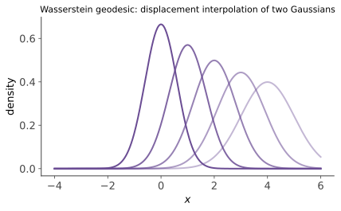

最优传输 II · Wasserstein 几何与 Brenier 定理
对标：Santambrogio §1.3、§5–7 / Villani Topics 入门章 ｜ 前置：ot-01、cvx-01、概率 V 平方成本 \(c = \|x-y\|^2\) 的世界格外美好：Brenier 定理说最优映射是凸函数的梯度（高维的"单调重排"）；\(W_2\) 让概率分布全体成为一个几何空间——有距离、有测地线、有重心，"分布的插值与平均"从此有正确定义。
1. Brenier 定理
定理（Brenier 1987） \(\mu\) 绝对连续（有密度），\(c = \frac12\|x - y\|^2\)：存在唯一最优传输映射，且它是某凸函数的梯度：
【骨架】 对偶（ot-01）的最优 \(\varphi\) 做 c-变换：平方成本下 \(c\)-凹性 ⟺ \(\phi(x) = \frac{\|x\|^2}{2} - \varphi(x)\) 凸（Legendre 语言，cvx-01）；对偶取等条件（Fenchel–Young！）逼出 \(y \in \partial\phi(x)\)；\(\mu\) 绝对连续时凸函数 a.e. 可微（凸分析【引用 Rademacher/Alexandrov】）⇒ \(\partial\phi\) a.e. 单点 = \(\nabla\phi\)：计划集中在映射图上——Kantorovich 解自动是 Monge 解。\(\blacksquare\)
读法："凸函数的梯度"= 一维单调映射的高维正名（一维凸函数导数单调增——ot-01 §3 的单调重排恰是特例）；唯一性与结构一步到位。Monge–Ampère 方程：\(T_\#\mu = \nu\) 的换元写开是 \(\det(\nabla^2\phi)\,\rho_\nu(\nabla\phi) = \rho_\mu\)——完全非线性 PDE（正则性理论 = Caffarelli 的名作【引用】）：OT 与 PDE 的深水接口，知其坐标即可。
2. Wasserstein 空间的几何

\(W_2\) 是（二阶矩有限的）概率分布空间上的度量（三角不等式经"粘合引理"耦合拼接【骨架】）；且度量化弱收敛：\(W_2(\mu_n, \mu) \to 0 \iff \mu_n \xrightarrow{d} \mu\) + 二阶矩收敛【引用】——比 KL 温柔得多的拓扑（as-01 依分布收敛的度量化——统计与 OT 的接口）。
测地线（McCann 插值）：两分布间的"最短路径"
——沿最优映射匀速搬运：粒子各自直线行进。对比线性插值 \((1-t)\mu_0 + t\mu_1\)（两座山峰此消彼长——"鬼影"）：McCann 插值是山峰平移——形状在移动而非淡入淡出。"分布的正确动画"：形状插值、风格渐变、领域自适应的几何依据。
Wasserstein 重心：\(\min_\nu \sum\lambda_iW_2^2(\mu_i, \nu)\)——多个分布的"Fréchet 均值"：平均多张直方图/形状时保持形态（算术平均则糊成多峰）。
Otto 微积分一瞥【引用】：\(W_2\) 空间可视为无穷维黎曼流形（mfld 线预告），其上热方程 = 熵泛函的梯度流（JKO 格式）——"扩散 = 分布空间里的最速下降"：Fokker–Planck（sc-02）、Langevin 采样、扩散模型的又一层几何解读；分数阶推广与函数不等式（log-Sobolev）住在这条街【引用 Villani】。
3. 统计与计算的现实
经验分布的收敛速率（维数灾难）【引用 Dudley/Fournier–Guillin】：\(E\,W_2(\hat\mu_n, \mu) \asymp n^{-1/d}\)（\(d > 4\)）——高维下 OT 的样本代价指数级（对比 KL 基于密度估计的困难：各有各的灾难）；工程对策：切片 OT（随机一维投影平均——一维可排序！ot-01 §3 的复用）、投影/低维结构假设、或熵正则化（下一页 Sinkhorn 的统计红利之一）。
4. 练习与要点
例 1（Brenier 显式解：高斯对高斯） \(\mu = N(m_1, \Sigma_1) \to \nu = N(m_2, \Sigma_2)\)：最优映射线性 \(T(x) = m_2 + A(x - m_1)\)，\(A = \Sigma_1^{-1/2}\big(\Sigma_1^{1/2}\Sigma_2\Sigma_1^{1/2}\big)^{1/2}\Sigma_1^{-1/2}\)（验证 \(A\) 对称正定 ⇒ 是凸函数 \(\frac12x^\top Ax + \cdots\) 的梯度 ✓），且
——Bures 度量：唯一有闭式的高维情形（矩阵分析 II 的矩阵平方根在此营业）；FID（生成图像的标准评测指标！）就是特征空间上的这个公式——你每次看到 FID 分数都在用本例。
例 2（McCann vs 线性插值） \(\mu_0 = \delta_0, \mu_1 = \delta_1\)：McCann 给 \(\delta_t\)（点在走）；线性给 \((1-t)\delta_0 + t\delta_1\)（两点闪烁）——最小例子把"平移 vs 鬼影"看穿。
例 3（重心的体感） 两个单峰直方图（峰在 0 与 10）：算术平均 = 双峰；\(W_2\) 重心 = 峰在 5 的单峰——"平均形状"与"形状的平均"之别；多受试者脑图谱、字体平均、气候情景合成选后者的理由。\(\blacksquare\)
下一页：把 OT 算出来——熵正则化与 Sinkhorn 算法（收敛性证明）、切片 OT，以及生成模型对账（WGAN 与流匹配），最优传输收官。